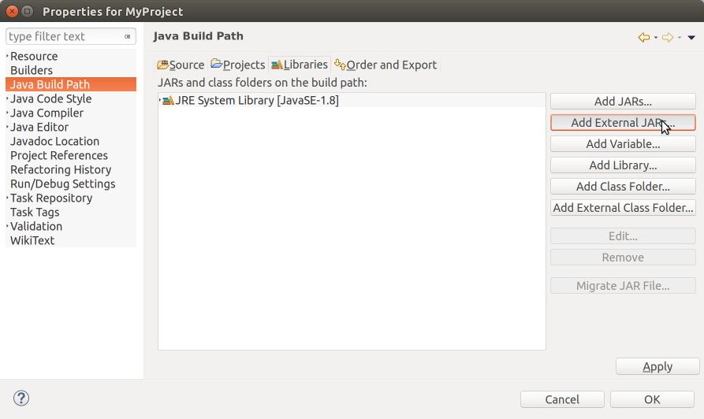
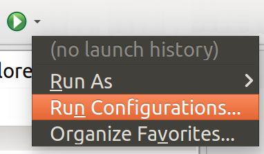
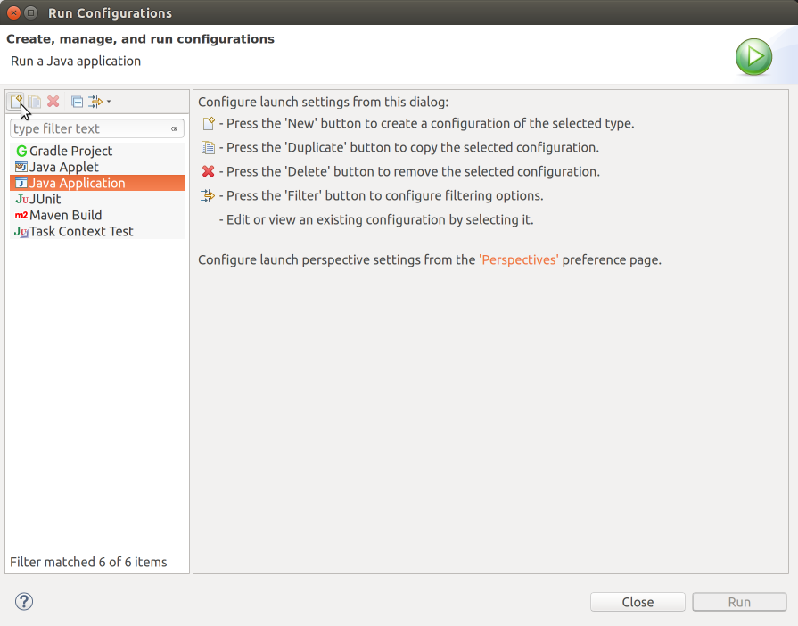
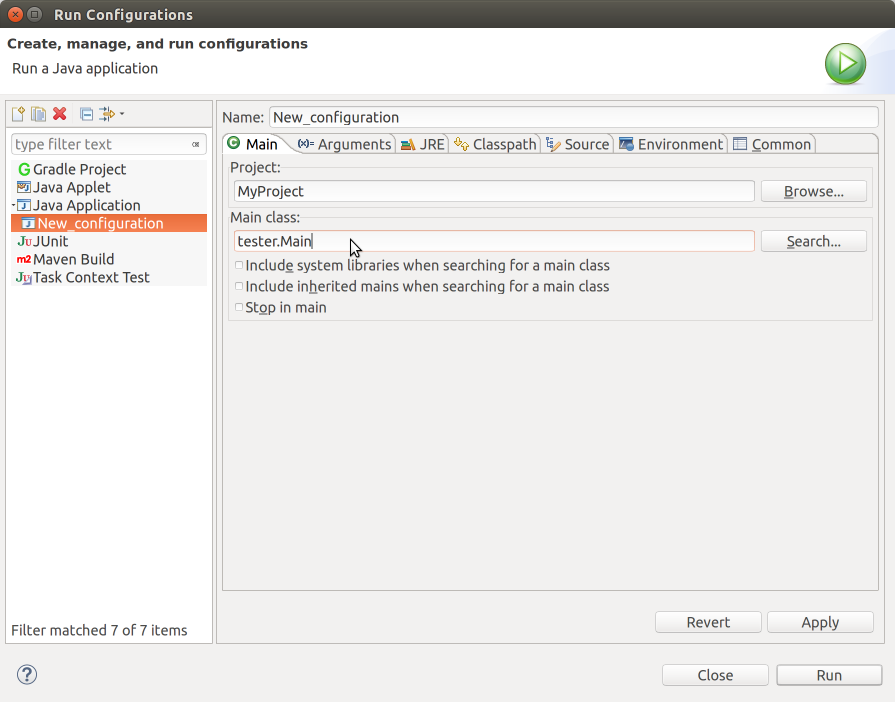
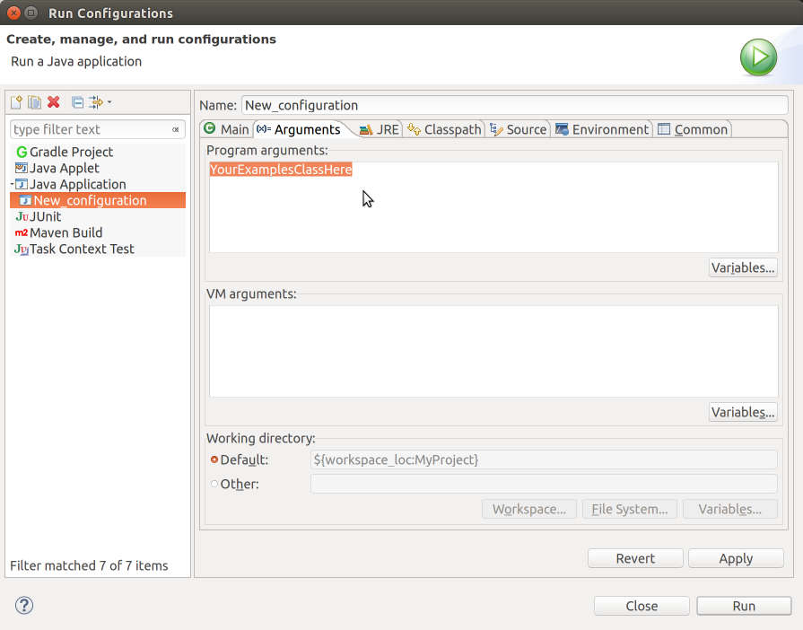

The Tester Library
The tester library provides a mechanism for testing programs, checking that their results are as expected.
2.1 Getting started
2.1.1 Adding the tester library to your project
These instructions are for Eclipse; if you choose to use a different IDE, the details will be different but the main ideas are the same.
Go to Project Properties (by right clicking on the project itself, in Eclipse’s Project Explorer view, or from the File menu).
In the list on the left, select the Java Build Path, then select the Libraries tab.
On the right click on Add External JARs...:

The file chooser window will be shown. Navigate to where you saved the tester.jar file and select it.
Hit Finish.
2.1.2 Using the tester library to run your project
Make sure your project is highlighted in the Package Explorer pane.
In the Run menu select Run Configurations.... Equivalently, you can use the dropdown menu from the Run toolbar button (which looks like a green "play" button):

In the list on the left, make sure "Java Application" is selected. Then, in the top left corner of the inner pane click on the leftmost item. (When you mouse over it should show New launch configuration.)

Choose a name for this configuration: usually you should choose the same as the name of your project, but you can make multiple run configurations, and so should give them different, memorable names.
In the Main class: click on Search....
Among Matching items select Main - tester and hit OK.

Click on the tab (x)= Arguments. In the Program arguments text field enter the name of your examples class.

At the bottom of the Run Configurations select Apply then Run.
To run the configuration again, just click the "play" button on the toolbar.
2.2 Using the tester library
2.2.1 Naming test methods
Methods in the class whose name is specified in the run configuration,
whose name begins with the four letters test,
whose sole argument is a parameter of type Tester,
and whose return type is either boolean or void.
In other words, only the first of the signatures below will be run as a test case by the tester library:
class ExamplesTesting { boolean testSomething(Tester t) { ... } // good! boolean tstTypos(Tester t) { ... } // wrong method name boolean dontTestThis(Tester t) { ... } // wrong method name boolean TestSomething(Tester t) // wrong method name boolean testSomething() { ... } // wrong signature boolean testSomething(Tester t, int anythingElse) { ... } // wrong signature int testSomething(Tester t) { ... } // wrong return type }
2.2.2 Writing test methods with multiple tests
Frequently, you will want to write multiple tests within a single test method. Your test methods will probably look something like this:
class ExamplesTesting { boolean testNumbers(Tester t) { return t.checkExpect(2 + 2, 4) // this should pass && t.checkExpect(9000, 70) // this should fail && t.checkExpect(4, 4) // this should pass && t.checkExpect(4, 5); // this should fail } }
Be careful! When you run this test method, you will not see four tests! Instead, you will see only one test passing, and one test failing. As soon as one test fails, because the code is combining the results with logical-and (&&), and logical operators short-circuit, the subsequent tests will not be run. Don’t be fooled into thinking you only have "just one failing test", if that test is in the middle of a block of other test cases.
Two alternate approaches are to separate each test into its own test method, or to separate the tests into individual statements. If you have not yet seen how to do the latter, then stick to the style above and just be careful.
2.2.3 Writing multiple test methods
class ExamplesTesting { boolean testScenario1(Tester t) { return t.checkExpect(.......); } boolean testScenario2(Tester t) { return t.checkExpect(.......); } boolean testScenario3(Tester t) { return t.checkExpect(.......); } }
be aware that the tester library deliberately runs your tests in a random order every time. In other words, there is no guarantee that testScenario2 will run before testScenario3 or after testScenario1. This ensures that you’re not subtly relying on your tests running in a particular order relative to each other (especially when you rely on randomness or other mutable state) in order to pass. You need to ensure that your test cases are standalone, self-consistent, and can pass in whatever order they happen to run.
Within a single test method, tests will run in the sequence you wrote them in, like any Java method. The randomness described here is only at the level of independent test methods.
(This random-order behavior is standard across most testing frameworks, and is helpful for "keeping your code honest" about what is being tested.)
2.2.4 The testing methods
The tester library exposes the following methods:
2.2.4.1 Basic methods:
<T> boolean checkExpect(T actual, T expected);
<T> boolean checkExpect(T actual, T expected, String testName);
This is the simplest testing form, and it applies to pretty much any type of data. The first argument is the actual result of the expression that you’re trying to test, and the second result is the expected value you intend it to be.
The checkExpect method will compare the two values in different but generally intuitive manners, depending on their type. See below for a more detailed description.
Warning: You should not use this method to compare two double values, because floating-point numbers can’t be compared reliably for equality, due to rounding error. See checkInexact below, instead.
The second form of this method allows specifying a descriptive message to name the test and remind any reader of the code what its purpose was. (Indeed, checkExpect(actual, expected) is just a shorthand for checkExpect(actual, expected, ""), with no test name.)
<T> boolean checkInexact(T actual, T expected, double tolerance);
<T> boolean checkInexact(T actual, T expected, double tolerance, String testName);
This method compares two values in the same manner as checkExpect, but it handles double values differently. Rather than hoping that two double values are precisely identical, this test specifies a tolerance within which the test should consider two numbers as equal. This is given as a relative tolerance, meaning a fraction of the input values, rather than as an absolute tolerance, meaning the same rounding error regardless of the magnitude of the values. In other words:
Test
Result
Reason
checkInexact(1.001, 1.000, 0.01)
Passes
1.001 is within 1% of 1.000
checkInexact(1001, 1000, 0.01)
Passes
1001 is within 1% of 1000
checkInexact(1.050, 1.000, 0.01)
Fails
1.050 is not within 1% of 1.000
checkInexact(1050, 1000, 0.01)
Fails
1050 is not within 1% of 1000
(Specific details: To compute the relative error, the tester library divides the difference between the actual and expected values by the average of the actual and expected values, to remove a slight numerical bias in the computation.)
When either the actual or expected values are precisely 0.0, the tolerance is treated as an absolute tolerance.
The second form of this method allows specifying a descriptive test name, just as with checkExpect above.
<T> boolean checkFail(T actual, T expected);
<T> boolean checkFail(T actual, T expected, String testName);
This method is the opposite of checkExpect: it passes when the two values are not the same.
The second form of this method allows specifying a descriptive test name —
it is probably a particularly good idea to supply one when using this form of test, since it’s somewhat counterintuitive to describe when it passes! <T> boolean checkInexactFail(T actual, T expected, double tolerance);
<T> boolean checkInexactFail(T actual, T expected, double tolerance, String testName);
This method is the opposite of checkInexact: it passes when the two values are not the same.
The second form of this method allows specifying a descriptive test name.
2.2.4.2 Exception testing
<T> boolean checkException(Exception e, T target, String method, Object... args);
<T> boolean checkException(String testName, Exception e, T target, String method, Object... args);
This testing method checks that invoking a method on a given object with a given set of parameters produces the expected exception. This testing form has a rather strange signature: it supplies the name of the method to be invoked on the given target argument, followed by whatever args are needed to invoke the method. This roundabout mechanism is necessary since, by definition, exceptions typically abort the normal control flow of the program, which would prevent the tester method from ever running. In other words, while we’d like to write
t.checkException(myObject.aMethodThatThrows(arg1, arg2), someException) Java’s order of evaluation would mean that myObject.aMethodThatThrows(arg1, arg2) will throw an exception before t.checkException gets a chance to run. As a consequence, we write the following:
t.checkException(someException, myObject, "aMethodThatThrows", arg1, arg2) and it effectively behaves as follows:
try { myObject.aMethodThatThrows(arg1, arg2); // Should not get here: the method should've thrown an exception! checkExpect(false, true, "Expected this method to throw an exception, and it didn't"); } catch (Exception e) { // check that we get the right exception checkExpect(e, someException); } The second form of this method allows specifying a descriptive test name. Note: because this method accepts an arbitrary set of arguments at the end, the test name must come first, unlike all other named test methods.
<T> boolean checkNoException(T target, String method, Object... args);
<T> boolean checkNoException(String testName, T target, String method, Object... args);
This testing method is the opposite of checkException: it ensures that a given method call does not throw any exception. It passes regardless of the return value of the method, provided no exception was thrown. Analogous to checkException, we write the following:
t.checkNoException(myObject, "aMethodThatShouldNotThrow", arg1, arg2)
and it effectively behaves as follows:
try { myObject.aMethodThatShouldNotThrow(arg1, arg2); checkExpect(true, true, "Expected this method to work without exception, and it did"); } catch (Exception e) { checkExpect(false, true, "This method threw an unexpected exception"); } The second form of this method allows specifying a descriptive test name. Note: because this method accepts an arbitrary set of arguments at the end, the test name must come first, unlike all other named test methods.
Note: To test methods on the String class itself, pass an explicit Object[] array as the last argument, instead of the varargs parameter. Otherwise the named-variant of the test method is ambiguous with the unnamed one.
<T> boolean checkConstructorException(Exception e, String className, Object... args);
<T> boolean checkConstructorException(String testName, Exception e, String className, Object... args);
This method allows checking that a class’ constructor throws an expected exception. Analogous to checkException, we need to supply the name of the class to be constructed, and the arguments to the constructor. In other words, we write the following:
t.checkConstructorException(someException, "MyClass", arg1, arg2) and it effectively behaves as follows:
try { new MyClass(arg1, arg2); // Should not get here: the constructor should've thrown an exception! checkExpect(false, true, "Expected this constructor to throw an exception, and it didn't"); } catch (Exception e) { // check that we get the right exception checkExpect(e, someException); } The second form of this method allows specifying a descriptive test name. Note: because this method accepts an arbitrary set of arguments at the end, the test name must come first, unlike all other named test methods.
<T> boolean checkConstructorNoException(String className, Object... args);
<T> boolean checkConstructorNoException(String testName, String className, Object... args);
This testing method is the opposite of checkConstructorException: it ensures that a given constructor call does not throw any exception. It passes regardless of the object produced by the constructor, provided no exception was thrown. Analogous to checkConstructorException, we write the following:
t.checkNoException("ClassNameWhoseConstructorShouldNotThrow", arg1, arg2)
and it effectively behaves as follows:
try { new ClassNameWhoseConstructorShouldNotThrow(arg1, arg2); checkExpect(true, true, "Expected this constructor to work without exception, and it did"); } catch (Exception e) { checkExpect(false, true, "This constructor threw an unexpected exception"); } The second form of this method allows specifying a descriptive test name. Note: because this method accepts an arbitrary set of arguments at the end, the test name must come first, unlike all other named test methods.
Note: To test constructors on the String class itself, pass an explicit Object[] array as the last argument, instead of the varargs parameter. Otherwise the named-variant of the test method is ambiguous with the unnamed one.
<T> boolean checkExceptionType(Class<?> exnType, T object, Object... args);
<T> boolean checkExceptionType(String testName, Class<?> exnType, T object, Object... args);
The checkException method above ensures that the method under test throws precisely the desired exception: it must have exactly the same exception type, and exactly the specified message. Sometimes, though, this precision is unnecessary or infeasible: the message might be too long, or somewhat unpredictable, or the method might throw one of several exception types. This tester method allows checking merely that the method under test throws an exception of the given type or one of its subtypes. Using this method requires another quirk of Java’s syntax, as follows:
t.checkExceptionType( // The class of the expected exception IndexOutOfBounds.class, // The object being tested, myArrayList, // The name of the method being invoked, "get", // Any arguments to the method -1); For now, think of the .class syntax as asking Java to provide some (runtime) value corresponding to the (compile-time) class. Likewise, think of the Class<?> syntax as asserting that this runtime value represents some kind of class.
This test behaves effectively as follows:
try { myArrayList.get(-1); // Should not get here: the method should've thrown an exception! checkExpect(false, true, "Expected this method to throw an exception, and it didn't"); } catch (Exception e) { // check that we get the right kind of exception checkExpect(e instanceof IndexOutOfBounds, true); } Therefore, to check that a method simply throws an exception, of whatever type, use a more general exception class:
t.checkExceptionType( RuntimeException.class, myArrayList, "get", -1); This method invocation will raise an IndexOutOfBounds exception, and since that is an instanceof RuntimeException, this test will pass.
The second form of this test method allows specifying a descriptive test name. Note: because this method accepts an arbitrary set of arguments at the end, the test name must come first, unlike all other named test methods.
<T> boolean checkConstructorExceptionType(Class<?> exnType, String className, Object... args);
<T> boolean checkConstructorExceptionType(String testName, Class<?> exnType, String className, Object... args);
This method is to checkConstructorException as checkExceptionType is to checkException.
The second form of this test method allows specifying a descriptive test name. Note: because this method accepts an arbitrary set of arguments at the end, the test name must come first, unlike all other named test methods.
<T> boolean checkMethod(Object expected, T target, String method, Object... args);
<T> boolean checkMethod(String testName, Object expected, T target, String method, Object... args);
This method is provided to test methods that might throw exceptions, but are not expected to do so. This method is not strictly required, but is provided for completeness. Its signature behaves similarly to checkException, but rather than supplying the expected exception, we supply the expected result (compared using checkExpect).
The second form of this method allows specifying a descriptive test name. Note: because this method accepts an arbitrary set of arguments at the end, the test name must come first, unlike all other named test methods.
<T> boolean checkInexactMethod(double tolerance, Object expected, T target, String method, Object... args);
<T> boolean checkInexactMethod(String testName, double tolerance, Object expected, T target, String method, Object... args);
These methods are to checkMethod as checkInexact is to checkExpect.
2.2.4.3 Testing methods with randomized results:
All the methods described above anticipate that the methods are deterministic. Sometimes, we need to test randomized methods instead, that might return one among several randomly chosen results.
<T> boolean checkOneOf(T actual, T... expected);
<T> boolean checkOneOf(String testName, T actual, T... expected);
This method checks whether the actual result is the same as any one of the expected results (using checkExpect for comparison).
The second form of this method allows specifying a descriptive test name. NOTE: if T is String, that is, if you are testing a randomized method that returns a String result, you must specify a test name: otherwise, Java will interpret your actual result as the test name, your expected result as the actual result, and then have no expected results!
<T> boolean checkInexactOneOf(double tolerance, T actual, T... expected);
<T> boolean checkInexactOneOf(String testName, double tolerance, T actual, T... expected);
These methods are to checkOneOf as checkInexact is to checkExpect. Note the reversed argument order: the tolerance and test name must come first, before the actual and expected arguments.
<T> boolean checkNoneOf(T actual, T... expected);
<T> boolean checkNoneOf(String testName, T actual, T... expected);
<T> boolean checkInexactNoneOf(double tolerance, T actual, T... expected);
<T> boolean checkInexactNoneOf(String testName, double tolerance, T actual, T... expected);
These methods are to checkOneOf as checkFail is to checkExpect: they pass if the actual result is not the same as any of the expected results.
The same caveats about testing Strings apply: you must supply the test name in such cases.
2.2.4.4 Collection-based methods:
<T> boolean checkSet(Set<T> actual, Set<T> expected);
<T> boolean checkSet(Set<T> actual, Set<T> expected, String testName);
This method allows comparing two java.util.Sets for set-equality: without regard to order, every value in each set must be equal (using the equals method on the values, and not checkExpect) to some value in the other set. This distinction is required to maintain compatibility with the definition of Set itself, which uses equals in order to decide if a value is a duplicate of one already in the set. Unfortunately, it means that checkSet might produce unexpected results (compared to manually using checkExpect) unless the type T overrides equals appropriately.
The second form of this method allows specifying a descriptive test name.
<T> boolean checkIterable(Iterable<T> actual, Iterable<T> expected);
<T> boolean checkIterable(Iterable<T> actual, Iterable<T> expected, String testName);
This method allows comparing two java.lang.Iterable collections to see if they contain the same values in the same order, using checkExpect. The values must all be exact (no doubles).
The second form of this method allows specifying a descriptive test name.
<T> boolean checkInexactIterable(Iterable<T> actual, Iterable<T> expected, double tolerance);
<T> boolean checkInexactIterable(Iterable<T> actual, Iterable<T> expected, double tolerance, String testName);
This method is to checkIterable as checkInexact is to checkExpect.
The second form of this method allows specifying a descriptive test name.
2.2.4.5 Miscellaneous methods:
<T> boolean checkNumRange(Number actual, Number low, Number high);
<T> boolean checkNumRange(Number actual, Number low, Number high, String testName);
These methods test that the supplied number is within the semi-open interval [low, high) – that is, low is included, and high is excluded.
<T> boolean checkNumRange(Number actual, Number low, Number high, boolean lowIncl, boolean highIncl);
<T> boolean checkNumRange(Number actual, Number low, Number high, String testName, boolean lowIncl, boolean highIncl);
These methods are similar to the ones above, but allow specifying whether the endpoints of the range should be included or not. In other words, checkNumRange(actual, low, high) is equivalent to checkNumRange(actual, low, high, true, false).
<T> boolean checkRange(Comparable<T> actual, T low, T high);
<T> boolean checkRange(Comparable<T> actual, T low, T high, String name);
<T> boolean checkRange(Comparable<T> actual, T low, T high, boolean lowIncl, boolean highIncl);
<T> boolean checkRange(Comparable<T> actual, T low, T high, boolean lowIncl, boolean highIncl, String testName);
These methods are analogous to checkNumRange, generalized to arbitrary Comparable values.
<T> boolean checkRange(T actual, T low, T high, Comparator<T> comp);
<T> boolean checkRange(T actual, T low, T high, Comparator<T> comp, String name);
<T> boolean checkRange(T actual, T low, T high, boolean lowIncl, boolean highIncl, Comparator<T> comp);
<T> boolean checkRange(T actual, T low, T high, boolean lowIncl, boolean highIncl, Comparator<T> comp, String testName);
These methods are analogous to checkRange, but use the given Comparator instead of the compareTo method on Comparables.
2.2.5 How checkExpect compares for equality
Both values are null
Both values are identically the same object (using ==)
When both values are Strings, and the equals method returns true
When both values are boxed versions of primitive values (i.e. Integer, Double, Boolean, etc.), and their contained primitive values are equal
When both values are WorldScenes or WorldImages (see The Image Library for more information), and the scenes or images are constructed in the same manner: i.e., using the same overlays, besides, etc. to construct the intended image. It does not compare the scenes in terms of their final rendered pixel output.
When both values are arrays, and they have the same lengths, and the same values at the same indices (using sameValue recursively)
When both values are java.util.Sets, and they are set-equal as described in checkSet: i.e., using the equals method on the set values and not sameValue.
When both values are java.lang.Iterables, and they are iterable-equal as described in checkIterable: i.e., using sameValue to compare the sequence of values in order from both inputs.
When both values are java.lang.Maps, in which case they must have the same size, the same keys (using the containsKey operation on the Map), and corresponding values must be the same (using sameValue).
For everything else (including all user-defined classes), both values must be instances of the same class, and their fields must have the same values as compared using sameValue.
The tester library can handle cycles in the data being compared, and will not get stuck in an infinite loop. (If there are cycles that pass through a Array, Set or Map, however, then the equals methods must not get stuck in an infinite loop. However, if you are using such data structures rather than implementing your own, you are responsible for using them correctly.)